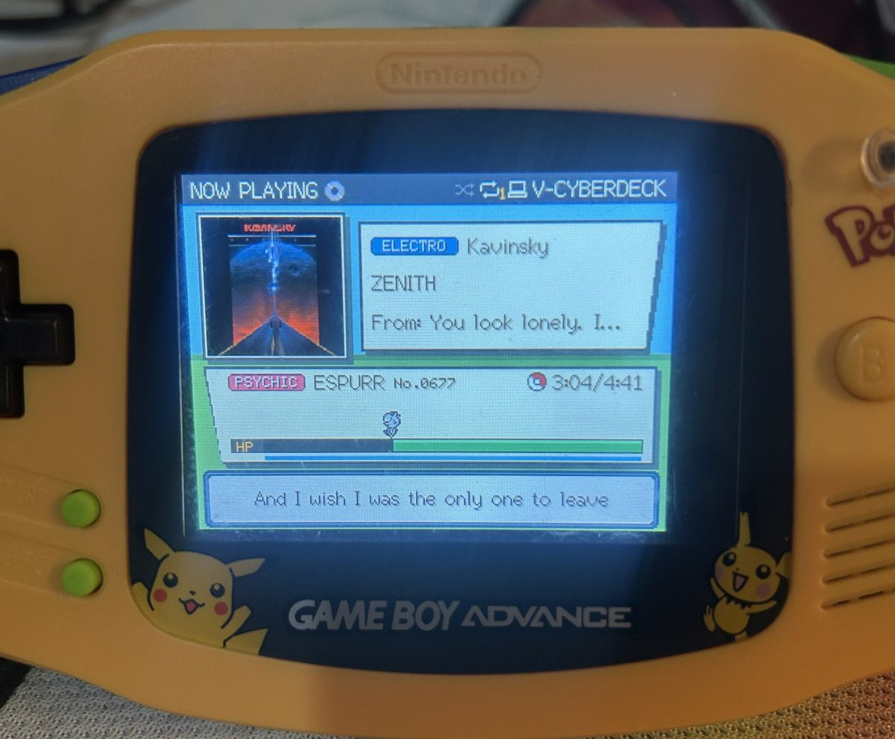
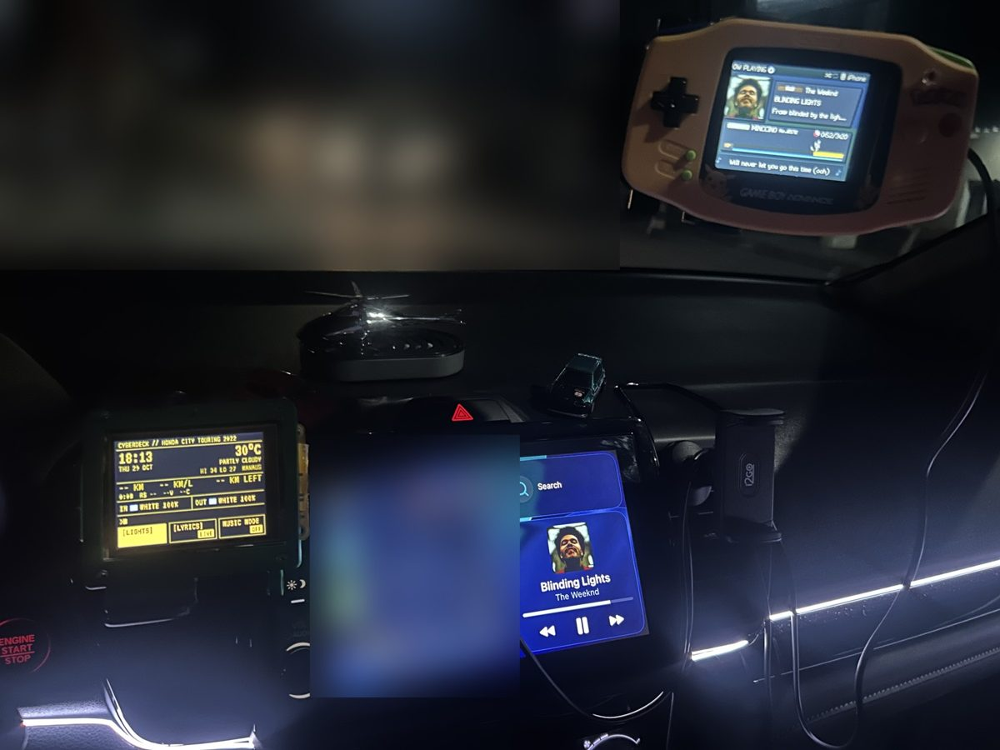
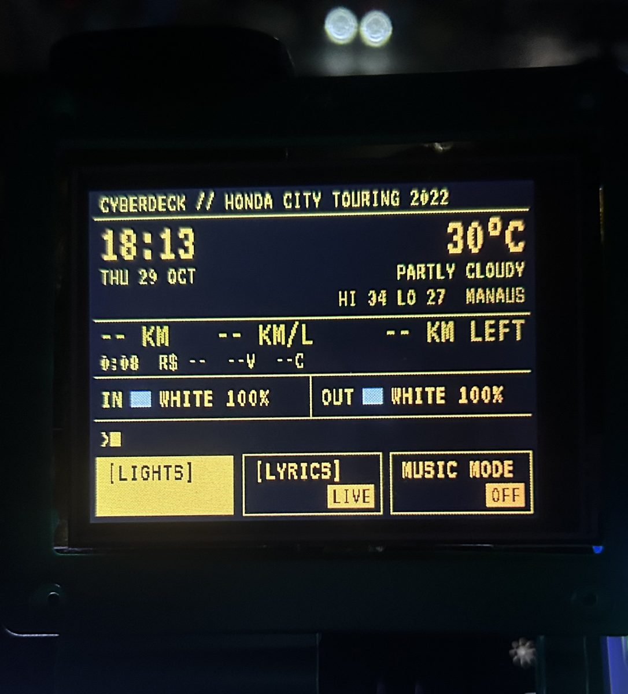

Car Cyberdeck, a taste of Pokémon nostalgia on my dashboard

Car Cyberdeck, um gostinho de nostalgia Pokémon no meu painel
What it is
A cheap ESP32 touchscreen inside a Game Boy Advance shell on my dashboard. It shows the song playing on Spotify as an old Game Boy-style Pokémon battle. A random Pokémon walks along the HP bar while the song plays, and synced lyrics appear in the dialogue box, including Japanese and Chinese text.
How it grew

A second screen took over the car's lights. It drives the inside and outside LED controllers over Bluetooth, with a terminal-style dashboard showing the clock, the weather and the trip timer. In music mode the lights follow the colour of each song. Then came more ways to control it: Siri, an Xbox controller and a small app on my Garmin watch. A phone page with a QR code works as a remote, and everything talks over the phone's hotspot, with no server.

The part I'm careful about
It lives in a moving car on a phone hotspot that drops all the time, so it has to fail safely. Updates go over WiFi, and if a new version crashes early the deck rolls back to the last good one. Watchdogs and back-offs keep it from hanging when a link drops, and the requests that change the lights are signed, so other devices on the hotspot can't take over.
Stack: C++17, Arduino, PlatformIO, ESP32 and ESP32-S3, Bluetooth LE, Garmin Connect IQ, host-side unit tests, CI, tagged releases
O que é
Uma tela touch ESP32 baratinha dentro de uma carcaça de Game Boy Advance no painel do carro. Ela mostra a música que tá tocando no Spotify como uma batalha Pokémon das antigas, no estilo Game Boy. Um Pokémon aleatório anda pela barra de HP enquanto a música toca, e a letra sincronizada aparece na caixa de diálogo, inclusive em japonês e chinês.
Como cresceu
Uma segunda tela assumiu as luzes do carro. Ela comanda os controladores de LED de dentro e de fora por Bluetooth, com um painel estilo terminal mostrando o relógio, o clima e o tempo de viagem. No modo música, as luzes seguem a cor de cada música. Depois vieram mais jeitos de controlar: Siri, um controle de Xbox e um appzinho no meu relógio Garmin. Uma página no celular com QR code funciona como controle remoto, e tudo se comunica pelo hotspot do celular, sem servidor.
A parte em que eu tomo cuidado
Ele vive num carro em movimento, ligado num hotspot de celular que cai toda hora, então precisa falhar de forma segura. As atualizações chegam por WiFi, e se uma versão nova der crash logo no começo, o deck volta pra última versão boa. Watchdogs e back-offs evitam que ele trave quando uma conexão cai, e os comandos que mudam as luzes são assinados, então outros aparelhos no hotspot não conseguem assumir o controle.
Stack: C++17, Arduino, PlatformIO, ESP32 e ESP32-S3, Bluetooth LE, Garmin Connect IQ, testes unitários no host, CI, releases com tag